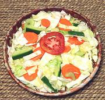

|
Cabbage Salad - JamaicanJamaica / California | ||||
| Makes: Effort: Sched: DoAhead: |
3-1/4 # * 30 min Yes |
This fine salad is excellent for buffet parties as it is tasty and very wilt resistant. Do see Comments for the California part. | |||
|
|
------- 1-1/2 8 5 8 ------- 1/3 1/4 1 1/2 ------- 1/2 |
--- # oz oz oz --- c c T T ---- c |
-- Vegies Cabbage (1) Celery Carrot Cucumbers (2) -- Dressing Vinegar (3) Olive Oil ExtV Sugar Salt --------- Boiling Water |
Make - (30 min)
|